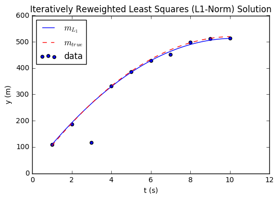

Title: L1 vs L2 Minimization Date: December 7, 2016
This is a simple example and implementation of regression by minimizing the L1 or L2 norm.
The model is the coefficients in the equation of motion for a projectile over time
Time is measured at specific times, and the position of the projectile is recorded
The relationship between
The L2 minimizing solution, aka the least squares solution, can be done directly
In contrast the L1 minimizing solution will not appreciably change to accomodate an outlier and is more robust.
import numpy as np import matplotlib.pyplot as plt %matplotlib inline
def display(G, m_true, m_est, m_est_label='', title=''): plt.scatter(G[:, 1], d, label='data') xs = np.linspace(G[0, 1], G[-1, 1], 100) ys = m_est[0] + m_est[1] * xs - 0.5 * m_est[2] * xs * xs true_ys = m_true[0] + m_true[1] * xs - 0.5 * m_true[2] * xs * xs plt.plot(xs, ys, label=m_est_label) plt.plot(xs, true_ys, 'r--', label=r'$m_{true}$') plt.xlabel('t (s)') plt.ylabel('y (m)') plt.legend(loc='best') plt.title(title)
def min_L2_norm_solution(d, G): lhs = G.T @ G rhs = G.T @ d inv = np.linalg.inv(lhs) m = inv @ rhs return m def min_L1_norm_solution(d, G, iterations=10, epsilon = 0.01): m = min_L2_norm_solution(d, G).T for i in range(iterations): res = d - G @ m res[np.abs(res) < epsilon] = epsilon R = np.identity(np.size(d, 0)) R[np.diag_indices_from(R)] = 1 / np.abs(res) lhs = (G.T @ R) @ G rhs = (G.T @ R) @ d inv = np.linalg.inv(lhs) m = (inv @ rhs).T return m
# True model (unknown) and observed data (known) m = np.array([10, 100, 9.8]).T d = np.array([109.4, 187.5, 267.5- 150, 331.9, 386.1, 428.4, 452.2, 498.1, 512.3, 513.0]).T
# Construct G matrix G = np.zeros((np.size(d, 0), np.size(m, 0))) G[:, 0] = 1 G[:, 1] = np.cumsum(G[:, 0]) G[:, 2] = -0.5 * G[:, 1] * G[:, 1] print(G)
[[ 1. 1. -0.5] [ 1. 2. -2. ] [ 1. 3. -4.5] [ 1. 4. -8. ] [ 1. 5. -12.5] [ 1. 6. -18. ] [ 1. 7. -24.5] [ 1. 8. -32. ] [ 1. 9. -40.5] [ 1. 10. -50. ]]
m_l2 = min_L2_norm_solution(d, G) print("L2 solution = ", m_l2) display(G, m, m_l2, r'$m_{L_2}$', 'Least Squares (L2-Norm) Solution')
L2 solution = [-11.09166667 95.26674242 8.2719697 ]
m_l1 = min_L1_norm_solution(d, G, 100) print("L1 solution = ", m_l1) display(G, m, m_l1, r'$m_{L_1}$', 'Iteratively Reweighted Least Squares (L1-Norm) Solution')
L1 solution = [ 17.14221124 96.98914788 9.48049602]
